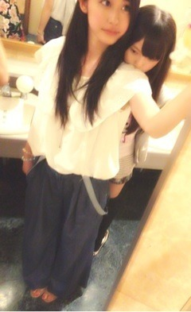

| 2012/07 27 Fri | そうだったらいいのにな♪そうだったらいいのにな♪♪♪(o・ω・)ノ)) |
題名byあみ。
やっふーいヽ(^0^)ﾉ
オリンピックの
なでしこJAPAN、
そして男子サッカー、
共に勝ちましたねっ(o>ω<o)‼
さすが日本です

オリンピックの、いい幕開けになったんではないですかねーー⁇♡♡
頑張ろうって勇気もらえる‼ふふ

いくちゃんとね、
オリンピック一緒に頑張ろうぜっ‼
おうっ‼
開幕式楽しみだな‼
だなっ‼
みたいなことを話しながら帰ってるの笑
それやってたらまさかのあすかに
笑われたわーーー
頑張ろうなっ‼

実は今日は９時から
Under Station緊急生放送SP‼わーい
発表もあるから、
ぜひぜひ聞いてみてくださーい◝(●˙꒳˙●)◜
私服の感想のほうもありがとーう♡
しばらく個握がないから
いっぱい私服を載せようかと思ってるのですははっ
結構いろんなテイストの服を持ってるから
どゆのが似合うか教えてくれたら
嬉しす( ˙³˙)


このまえ急遽みんなで原宿に遊びに行ったときの私服ーー

白いシフォンのブラウスに、
太いデニムのバギーパンツスタイル＊
またまた
テイストの違う私服でしょー

後ろにちっこいのがくっついとる。
かわいいのう。(*´艸`)
で、後ろの鏡にちょこっと写ってる
花柄の人はあみだったりする。
(*´艸`)ふふ
楽しそうでしょ♡⁇
感想くださいなななな←
前回の質問で、
パン派とご飯派同じくらいだったよー‼
朝食べてない(> <)
ってゆう方多かったけど食べなきゃだめよー(´×ω×`)
んもう
今日の質問は
アイスはミルクとかチョコの濃厚派⁇
それともソーダとかレモンとかのさっぱり派⁇
ちはるはそのときによるけど
いまはさっぱり系食べたい気分だ...
♡
ぢゃあこれからレッスンや‼
頑張ってくるねー( ´ ▽ ` )ﾉ

ばいるんっ
るんるんっ
ちはるんっ
♪♪(o・ω・)ノ))
コメント(62)
2012/07/27 16:00